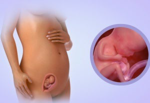

15 неделя беременности
В течение пятнадцатой недели организм усердно развивает и тренирует мышцы, а также лёгкие. Плод осуществляет множество дыхательных упражнений, заглатывая и выплёвывая амниотическую жидкость. С помощью этих упражнений формируется лёгочная ткань, которая подготавливает организм ребёнка к его первому вдоху и глотку воздуха после появления на свет.
Ваш маленький сейчас способен тереть глаза, зевать и даже моргать. Хотя веки малыша еще закрыты, все же теперь он может чувствовать свет, и если направить луч света на живот – он отвернется.
Если вы съедите или выпьете что-нибудь, что ему не понравится, вы можете почувствовать, будто за пуповину кто-то потянул – это не совсем так, но маленький уже сейчас в состоянии хвататься за пуповину.
У ребенка формируется линия роста волос, и его голова начинает покрываться волосами. У него растут также ресницы и брови.
Несмотря на то, что ребенок регулярно икает, звуков при этом не издается, поскольку трахея в настоящее время заполнена жидкостью.
Малыш также уже в состоянии слышать.
Кожа малыша имеет красноватый цвет, еще довольно тонкая, сквозь которую просвечиваются кровеносные сосуды.
В то же время продолжает развиваться детский скелет и костный мозг.
Рост крошки от копчика до темечка может даже превышать 10 см, а весит ребёнок уже 70 г.
Наружные половые органы дифференцированы, а значит, на УЗИ на 15 неделе беременности уже можно определить пол плода, правда если малыш сам захочет это сделать и развернется в нужном ракурсе.
Ножки уже не отстают в росте, они даже стали длиннее ручек.
На 15 неделе протекания беременности наступает очень важный момент. Начинает формироваться кора головного мозга плода.
Кора будет формироваться в течение всего месяца. На пятнадцатой неделе левое и правое полушария мозга плода покрываются бороздками и извилинами, а также начинается процесс деления нервных клеток. Формируется центральная нервная система, которая в дальнейшем и управляет организмом ребёнка. Начинает также развиваться система желез внутренней секреции плода. Железы начинают функционировать, активно работают потовые и сальные железы. А в плоде мужского пола на этом этапе вырабатывается мужской гормон, который называется тестостерон.
Активно функционируют самые главные органы организма.
Сердечко гоняет кровь по организму. Оно способно прогонять примерно 28 литров за сутки.
Выделяется первая желчь в организме. Её вырабатывает желчный пузырь. В дальнейшем эта первая желчь сформирует первый кал ребёнка.
Активно работают почки, они вырабатывают мочевую жидкость, которая выводится организмом прямо в околоплодные воды. Околоплодные воды постоянно обновляются.
Дыхательная система плода становится совершенной.
На протяжении пятнадцатой недели активно развиваются мышечная ткань, а также суставы младенца. Плод совершает различные движения (плавает, вращается, переворачивается, кувыркается, сгибает и разгибает ручки, ножки и кулачки).
Кости организма становятся крепче, кожа уже состоит из нескольких слоёв.
УЗИ на 15 неделе беременности
ВАШ ОРГАНИЗМ
Как правило, к 15 неделе уже все домочадцы полностью осознали и свыклись с мыслью скорого прибавления в семье, благодаря чему оказывают всяческую поддержку беременной женщине. Тем более, что живот на 15 неделе беременности уже заметно округлился, матка все больше приподнимается вверх (теперь ее верхняя стенка находится на расстоянии 7-7,5 см ниже уровня пупка).
Одни врачи начнут измерять расстояние от лобковой кости до дна вашей матки (высоту состояния дна матки) в качестве меры роста плода. Другие врачи не начинают измерять высоту дна матки до наступления 24 недели беременности.
Увеличивающаяся матка оставляет меньше места пищеварительной системе, вследствие чего вы можете чаще страдать от изжоги.
Для предупреждения или уменьшения тяжести изжоги рекомендуется есть меньшими порциями.
Грудь продолжает наливаться, увеличиваться в объеме, соски постепенно темнеют. Кроме того, усиливается пигментация кожи: темнеют веснушки, родинки, продольная линия на животе. Все это происходит из-за выработки меланина, которая усиливается с каждым днем. Но это не повод для волнения, поскольку после родов все это пройдет.
Мамочки уже полностью свыклись со многими симптомами беременности, но не перестают удивляться появлению новых.
Так, например, постоянную заложенность носа можно списать на гормональные изменения и увеличившийся объем крови. И пусть это не очень приятное, но, в целом, – вполне нормальное состояние беременной женщины, имеющее название «ринит беременных». Не стоит заниматься самолечением, не смотря на то, что сейчас уже отступает угроза токсического воздействия на малыша лекарственных средств. Если невозможно терпеть заложенность носа, обратитесь к врачу, он пропишет допустимые средства.
Ощущения на 15 неделе могут быть подпорчены. Все дело в том, что теперь могут возникнуть некоторые опасности для здоровья женщин, имеющих проблемы с работой почек и надпочечников, особенно если вынашиваемый ребенок – мальчик. Дело в том, что у мальчиков активно вырабатывается мужской гормон тестостерон, который в случае наличия у матери проблем с надпочечниками, может привести к дисбалансу, что неблагоприятно отразится на нормальном течении беременности. Однако предотвратить нарушения можно при помощи своевременно проведенного анализа на выявление в моче уровня 17-кетостероидов с последующим (в случае выявления) лечением.
15 неделя – наилучший период для анализа околоплодных вод – амниоцитоза, на основании которого можно судить не только о наличии или отсутствии у плода пороков развития, но и о его группе крови, уровне билирубина, белков, гормонов, а также о половой принадлежности. Этот анализ проводят женщинам с отрицательным резус-фактором, генетическими заболеваниями или предыдущими выкидышами. Бояться данного анализа не стоит, поскольку именно на 15 неделе матка инертна, следовательно, процедура абсолютно безопасна. Но все же, не стоит проводить данную манипуляцию без основательных причин.
ЗДОРОВЫЕ СОВЕТЫ
Наступило время спать на левом боку, поскольку это помогает обеспечивать максимальный кровоток между вами и ребенком. Врачи рекомендуют спать, согнув верхнюю ногу в колене и вытянув нижнюю. Можно посоветовать спать с подушкой, зажатой между ногами, особенно если вы страдаете от ишиалгических болей, поскольку при этом уменьшается давление на седалищный нерв.
Также многие беременные женщины приобретают специальные подушки для сна беременных. Эти подушки имеют различные формы, но чаще всего встречаются в форме банана или буквы С. Кроме того, данные подушки очень пригодятся вам при кормлении малыша.
Сон важен для вас, даже если вы не чувствуете себя такой же усталой, как в первые недели беременности. Если вам не хочется отходить ко сну в одиночестве, попросите партнера посмотреть фильм или почитать книгу рядом с вами, пока вы не уснете. Это также прекрасное время слиться с партнером в объятиях и заняться построением совместно с ним планов относительно будущего вашего малыша.
Во втором триместре женщинам также можно уделить внимание состоянию зубов, и если до беременности такая проблема, как кариес, не была устранена, то сейчас самое время.
ИШИАЛГИЯ
Радость ожидания будущего малыша может омрачить резкая боль в спине. Причиной такой боли зачастую становится воспаление (защемление) седалищного нерва при беременности или ИШИАЛГИЯ (ИШИАС) – так это звучит на языке официальной медицины.
Причиной ишиаса может стать увеличение нагрузки на спину или полученная ранее травма, но большинство случаев защемление, все-таки, встречается именно у беременных, поскольку растущий плод давит на тазовые кости и увеличивает нагрузку на позвоночник.
Воспаление седалищного нерва появляется преимущественно во втором триместре беременности и переносится беременной женщиной особенно сложно из-за того, что все органы работают на пределе и отличаются повышенной чувствительностью.
Продолжительность болевых ощущений невозможно спрогнозировать, поскольку они могут исчезнуть так же внезапно, как и появились, а могут наблюдаться в течение длительного времени.
Поскольку возникновение ишиаса провоцирует положение плода в матке, то до родов полностью избавиться от этого недуга не получится, но и оставлять данную проблему без внимания нельзя. Стандартная схема лечения по отношению к беременной женщине не может применяться, поскольку многие лекарства оказывают пагубное влияние на плод и могут стать причиной врожденных пороков. Вот что советуют в таком случае врачи:
- Будущей маме следует соблюдать постельный режим на жесткой поверхности.
- Массаж – незаменимое средство, которое позволит снять напряжение в мышцах, но прежде чем прибегнуть к нему посоветуйтесь с лечащим врачом какой вид массажа выбрать: мануальный или классический.
- Терапевтические ванны: 1-2 килограмма соли нужно растворить в 135 литрах горячей воды. Такая ванна поможет избавиться не только от ишиаса, но и снять боли, вызванные ревматизмом и невритом. Однако принимать терапевтические ванны можно только в первом триместре беременности, поскольку на более поздних сроках они могут стать причиной преждевременных родов.
- Лечебная гимнастика. Существует ряд упражнений, выполнение которых помогает укрепить мышцы спины и тем самым облегчить боли при ишиасе. Например, станьте на четвереньки, спину прогните, а голову опустите. Затем выпрямите спину и поднимите голову. Повторите эти движения несколько раз. Или еще вариант: станьте возле стены так, что бы ее касалась поясница, после чего расслабьтесь и снова прижмитесь к стене. Кстати эти упражнения выполняют еще одну очень важную функцию: они помогают подготовить мышцы спины и живота к родам. Также можете записаться на занятия йоги или в бассейн.
- Растирка и компресс. Можно делать растирку травами, настоянными на спирту, или горячий компресс – это позволит увеличить кровоток и снять спазм.
- Важным моментом является поддержание осанки и выбор обуви. Обувь должна быть на плоской подошве или, в крайнем случае, на каблуке не выше чем 3 см. Это необходимо для того, чтобы не создавать дополнительного напряжения в мышцах и не провоцировать защемление.
Это только некоторые рекомендации, но лучше позаботиться о здоровье спины заранее и при планировании беременности посетить не только врача, но и спортзал, чтобы мышцы были готовы к предстоящим нагрузкам.
Не стоит принимать различные медикаменты по совету подруг и бабушек.